| |
|
SANAL 3B: Araçlar ve Yardımcı Programlar
|
|
Yapılandırma ve Tercihler Tercihler
Sayısal ModellerGelişmiş Tercihler Izgaralar, Eksenler ve Pivot Noktası Grafik Sistem Yapılandırıcısı Boykesitten Proje Verisi Al Anaglif Yardımcı Programlar Yapılandırma ve Tercihler Çalışma alanı yapılandırması, hem görsel stili hem de 3B nesnelerin, kameraların vb. hesaplanma ve çalışma şeklini etkiler. Yapılandırma > Tercihler bölümündeki Sanal 3B kısmından diğer yapılandırma seçeneklerini bulmak mümkündür.
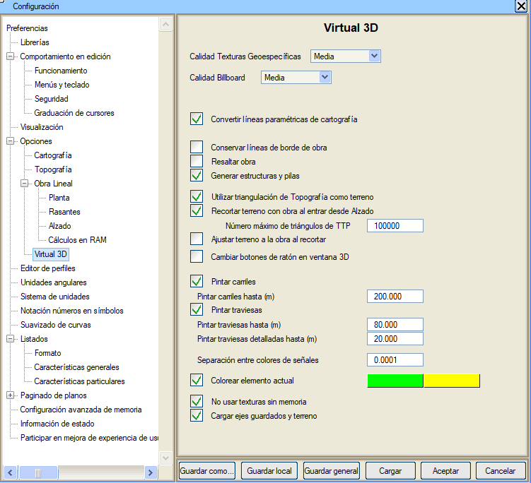
Not: Bu diyalog kutusu, sadece Sanal 3B dışında iken işlevseldir. Haritadaki parametrik çizgileri dönüştür: haritada tanımlanmış parametrik çizgileri dönüştürür; bunların tanımında ilişkili bir katı model olmalıdır. Proje sınırı çizgilerini koru: Bu çizgi, geçerli kota sahip köşe noktalarına uyar. Traversleri Boya: Sahnenin çizim akıcılığını sağlamak için belirtilen mesafeden daha uzaktaki rayların ve traverslerin boyanmamasını kontrol etme seçenekleri. Mevcut elemanı renklendir: Sanal 3B penceresinde seçilen nesnenin geometrisini kullanıcının seçeceği bir renkle (varsayılan olarak yeşil) vurgulamayı sağlar. Belleksiz dokuları kullanma: grafik kartının adanmış belleği olmadığında, eğer bu durum Sanal 3B penceresinin çalışmasını yavaşlatıyorsa, dokuların gösterilmemesini belirtmek için kullanılır. 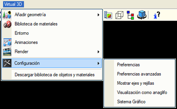
Tüm yapılandırma verileri, ilk olarak belirlenen kütüphane içindeki ispol3d.cfg dosyasına kaydedilir. Tercihler 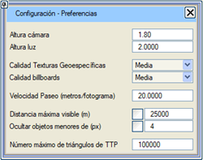 SANAL 3B modülünde aşağıdaki tercihler ayarlanabilir:
Coğrafi referanslı bir doku uygulandığında, program doku koordinatlarını otomatik olarak hesaplar ve görüntü pikseli / yüzey metresi arasındaki tam ilişki elde edilir. Doğal olarak, kalite ne kadar yüksek olursa, netlik veya detay seviyesi o kadar yüksek olur.
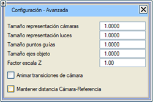Gelişmiş Tercihler
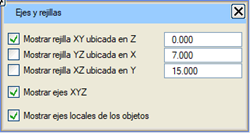 Izgaralar, uygulama tarafından sahnenin uzanım alanını tanımlamak ve imlece koordinat sağlamak için kullanılır. Örneğin bir kutu oluşturulduğunda, ızgaranın tanımladığı düzleme her tıklandığında, koordinatları (X,Y,Z) olan bir nokta döndürülür. Izgaralar, nesneler oluşturuldukça boyutlarını otomatik olarak ayarlar. Her zaman maksimum boyutlardan 100 m daha büyük bir alan seçilir. Uygulama, bunların görünürlüğünü etkinleştirmeye veya devre dışı bırakmaya ve her birinin başlangıç koordinatını tanımlamaya olanak tanır. 'Çalışma düzlemi' olarak hizmet etmenin yanı sıra, her bir görünümde bu değere bağlı olarak nesneler ızgaranın önünde veya arkasında gözlemlenir. XYZ seçeneği, her bir ızgara düzleminin kesiştiği yerde eksenlerin görünürlüğünü etkinleştirir veya devre dışı bırakır. Bu sadece görsel bir yardımcıdır. Bağlam menüsünde, Güncelle → Sahne Sınırları seçeneği, sahnenin kapladığı 3B alanı yeniden hesaplar ve 3B alanın ızgaralarını ve eksenlerini doğru konumlarına yerleştirir. 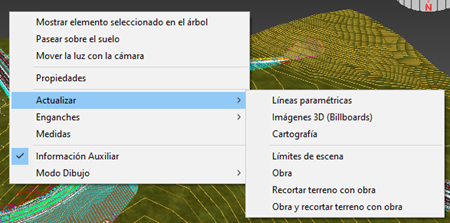
Tüm nesneler, bireysel (0,0,0) koordinatlarını sağlayan bir pivot noktasına göre referanslandırılır. Bu nokta ayrıca, nesneyi hiyerarşik olarak daha üst seviyedeki diğer nesnelerle ilişkilendirmek için de kullanılır. 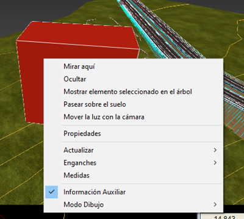
Grafik Sistem Yapılandırıcısı Hızlı Sıralama: Nesnelerin yer tespiti iki şekilde yapılabilir: sınırlayıcı kutularına göre (hızlı ama daha az hassas) veya tam 3B şekillerine göre (daha az hızlı ama daha hassas). Bu durum, geometrik olarak sınırlayıcı kutularından çok farklı olan ve şeffaf parçalar içeren çok sayıda iç içe geçmiş nesne olduğunda etkili olur. Bu seçenek etkinleştirildiğinde, ilk yöntem (sınırlayıcı kutuya göre) kullanılır. Boykesitten Proje Verisi Al 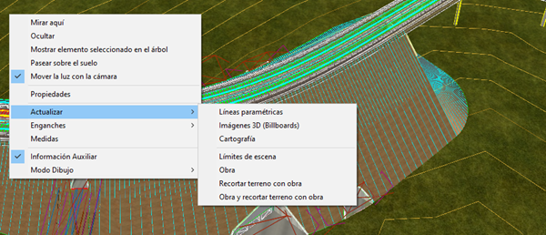
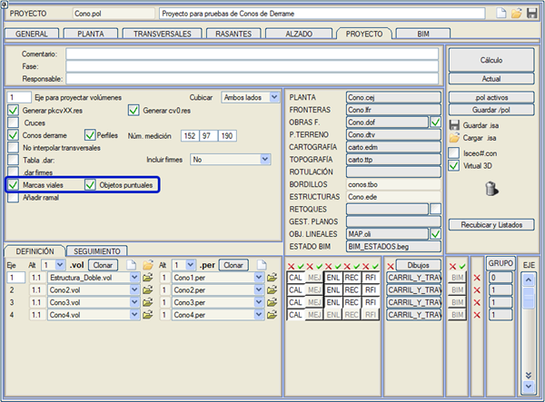
Stereoskopik (3 boyutlu) görünümden yararlanabilmek için, tipik kırmızı-mavi gözlüklere sahip olmak gerekir. Gözler arası mesafe, anaglifi izleyenin özelliklerine göre ayarlanabilir.  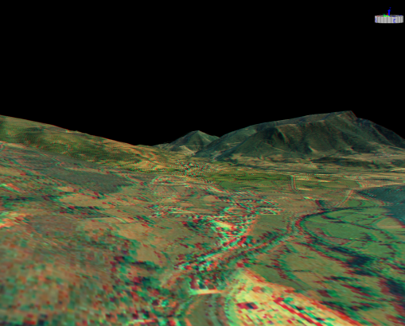
Sayısal Modeller Modeller genel olarak Kontrol > SAM Yüzey Kontrolü açılır menüsünden yüklenir:  BIM ağacı içinde, Harita düğümünde yüzey yöneticisinde belirlediğimiz farklı sayısal modelleri görebiliriz: 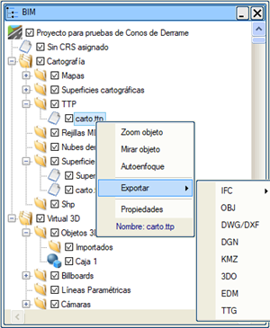
Yardımcı Programlar Bu işlevler, geometri ile özel veya tekrarlayan işler yapmayı sağlar. Sanal 3B ekranında bulunan nesnenin üzerine sağ fare tuşu ile tıklayıp Özellikler alt menüsüne gelerek, nesnenin bazı 3B özelliklerini değiştirebiliriz. Bir nesnenin bölüntülerini artırmak, onu oluşturan yüzeylerin üçgenlerini artırarak aydınlatıldığında 3B nesnelerin kalitesini artırır. Yöntem çok basittir, sadece programa yapılacak bölüntü sayısını belirtmek yeterlidir. Her bölüntü bir üçgeni dörde böler, bu nedenle iki bölüntü bir üçgeni on altıya dönüştürür ve bu şekilde devam eder. 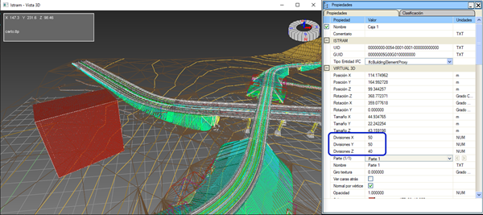
Bu işlevin geniş bir sayısal model üzerinde uygulanmasının, bilgisayarın hesaplama için zaman harcamasına neden olabileceğini unutmamak gerekir, bu nedenle uygulama diyalog kutusunda mevcut ve gelecekteki (işlem uygulandıktan sonraki) üçgen sayısını gözlemlemek tavsiye edilir. BIM ağacındaki bir nesnenin üzerine sağ fare tuşu ile tıklayarak Sil, Kes, Kopyala gibi işlemler yapabilirsiniz...  |